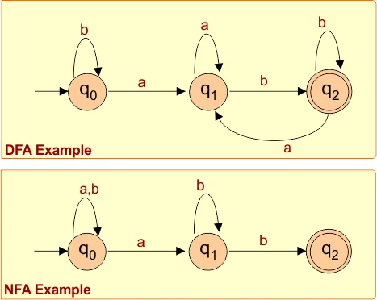

Regular Language
A regular language is any language that can be described by a regular expression, or recognized by a finite automaton — deterministic or non-deterministic. Languages are sets of strings over some alphabet, and regular languages form the simplest class in the Chomsky hierarchy. They are foundational in compiler design, lexical analysis, and computability theory.
NFA — Non-Deterministic Finite Automaton
An NFA can transition from one state to zero, one, or many states on a single input symbol. A string is accepted if any path through the NFA ends in an accepting state. This makes NFAs compact and elegant to design, though non-trivial to simulate directly.


DFA — Deterministic Finite Automaton
A DFA has exactly one transition per state per symbol. Starting from the initial state, it reads the input left-to-right and follows transitions deterministically. After consuming the full string, if the current state is an accepting state, the string is accepted. Every NFA has an equivalent DFA — they recognize the same class of languages.



Subset Construction Method
The subset construction algorithm converts an NFA into an equivalent DFA by treating sets of NFA states as individual DFA states.
Starting from the start state, for each possible input symbol we compute the union of all reachable NFA states and create a new DFA state for that set. The process repeats until no new state sets are produced. A DFA state is accepting if it contains at least one NFA accepting state. In the worst case this yields 2n DFA states from n NFA states.